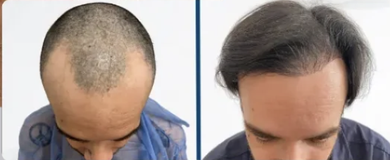
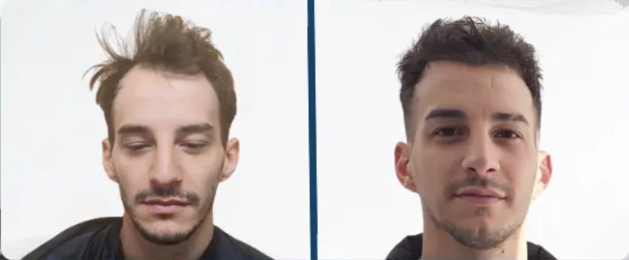
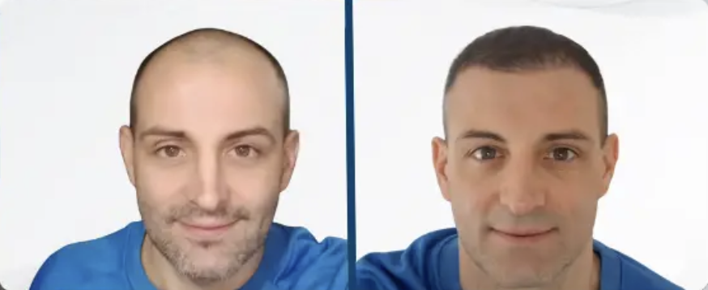

“Pensé que ya era tarde para mí. Hoy miro fotos de hace un año y no puedo creer el cambio. No solo de pelo: en cómo camino, cómo hablo, cómo me presento en reuniones.”
— Martín, 38 años
Evaluación completa, diagnóstico profesional y un plan claro para volver a verte con pelo.
Cupos limitados por agenda médica · Consulta sin compromiso
Esto es lo que cambia cuando dejás de esconderte bajo la gorra o el peinado de siempre.
“Pensé que ya era tarde para mí. Hoy miro fotos de hace un año y no puedo creer el cambio. No solo de pelo: en cómo camino, cómo hablo, cómo me presento en reuniones.”
— Martín, 38 años

“Lo que más me sorprendió fue la sinceridad. Me explicaron qué se podía lograr en mi caso y qué no. Eso me dio confianza para avanzar sin miedo a ‘quedar raro’.”
— Sebastián, 42 años

"Volví a sacarme fotos con mis hijos sin pensar desde qué ángulo salía. Parece un detalle, pero cambia todo."
— Diego, 35 años

"Después de años evitando espejos y fotos, hoy me siento cómodo conmigo mismo. El proceso fue más simple de lo que imaginaba y los resultados superaron mis expectativas."
— Carlos, 41 años
Claridad, contención y cero presión para decidir. Así es el paso a paso.
Elegís entre consulta online o presencial. Vas a recibir la confirmación y un recordatorio automático para que no se te pase.
Revisamos el estado actual de tu cabello, tu historia clínica y tus objetivos. Es el momento ideal para hacer todas las preguntas que tenés en mente.
Te mostramos qué opciones tenés, beneficios, tiempos estimados y cuidados necesarios. Sin presiones, sin letra chica, con total transparencia.
Podés decidir avanzar, pensarlo un tiempo o no hacerlo. La consulta en sí ya te deja con información valiosa para toda la vida.
La mayoría de los pacientes reserva en menos de 2 minutos.
La caída capilar es progresiva: cuanto más la dejás avanzar, menos densidad donante hay y más limitadas son las opciones.
Un buen plan no solo busca “sumar pelo”, también frenar o enlentecer la caída actual para que no sigas perdiendo terreno.
Para garantizar la calidad y el seguimiento, solo tomamos una cantidad limitada de evaluaciones por semana. Si hoy ves un horario disponible, lo ideal es reservarlo.
Elegí el día y horario que mejor se adapte a tu rutina. Atendemos de forma presencial y online.
¿Tenés dudas puntuales antes de reservar? Escribinos y te respondemos directamente por WhatsApp.
Resolvemos las dudas más comunes antes de que agendes.
Sí. La evaluación es gratuita y sin obligación de contratar ningún tratamiento. Nuestro objetivo es que tengas claridad total sobre tu caso, independientemente de lo que decidas después.
En ambos casos revisamos en profundidad tu situación y definimos un plan. La consulta presencial permite una exploración directa de tu cuero cabelludo, mientras que la online es ideal si vivís lejos o querés una primera aproximación rápida.
No trabajamos con soluciones genéricas ni con promesas irreales. Si en tu caso un microtrasplante no es la mejor opción, te lo vamos a decir con total transparencia y te propondremos alternativas más adecuadas.
Justamente por eso priorizamos la naturalidad por encima de todo. Definimos línea frontal, densidad y diseño pensando en cómo vas a verte hoy y en los próximos años, para que nunca parezca “hecho” sino propio.